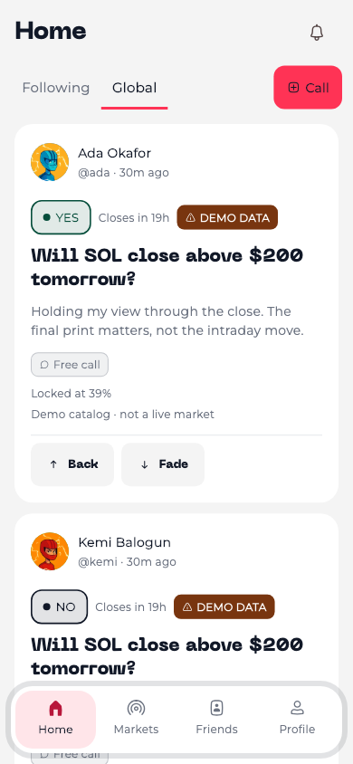
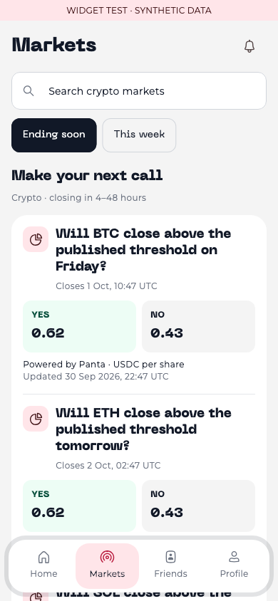
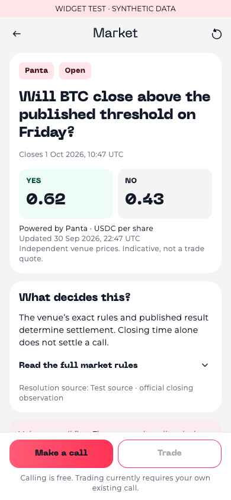
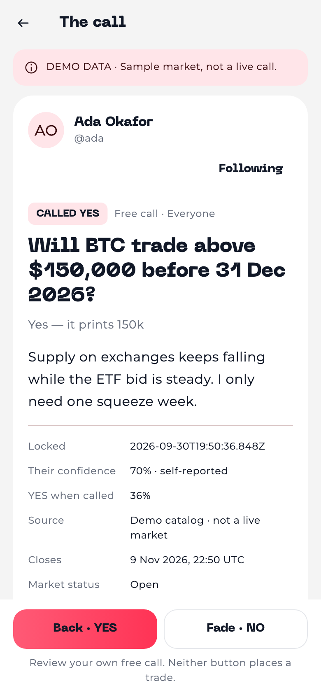
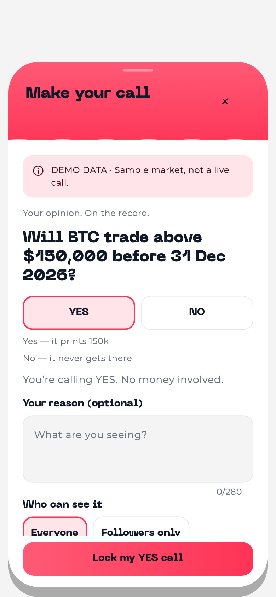
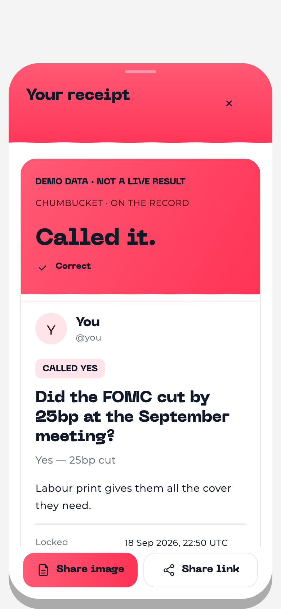
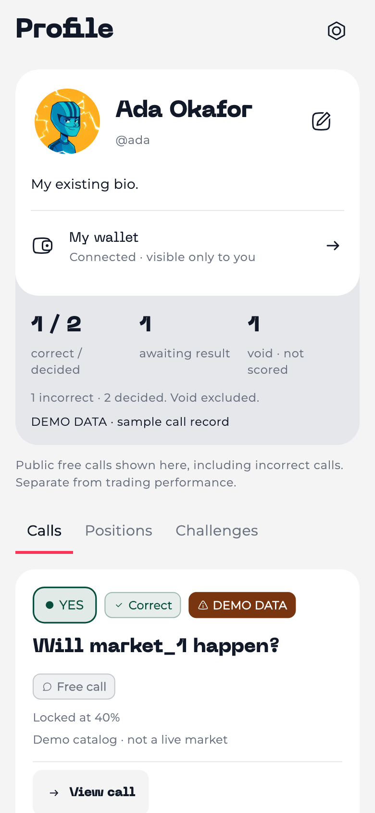

Chumbucket — native UI checkpoint
CHUMBUCKET / FLUTTER UI CHECKPOINT
The same Chumbucket.
A new place for your calls.
Actual Flutter widgets, rendered with bundled fonts and synthetic test data. These are screenshots—not live markets, device screenshots, or proof of trading readiness. Tap any screen to inspect it at full size.
Home · Markets · Friends · Profile. Existing accounts, wallet controls, friends and challenge history stay in the app. Implementation and verification notes →
01 · Home

People and reasoning first. No public balances, response counts or copy-trade controls.
02 · Markets

Panta-only discovery. Exact units and price age; no invented probability or chart.
03 · The market

Rules and source remain inspectable. Direct trading without an owned call remains a backend-dependent gap.
04 · The person’s call

The author stays attached to the statement. Back and Fade review your own call; neither submits a trade.
05 · Put it on record

Existing wave-sheet language. Explicit side, optional reason, audience and an immutable lock.
06 · The receipt

Complete receipts for correct, incorrect, void and pending calls. Private sharing checks are retained.
07 · Your profile

The existing person, edit flow and wallet. Record counts describe returned public calls, not an invented lifetime record.